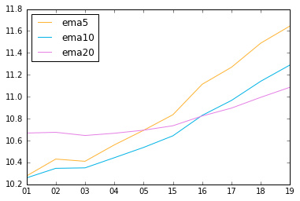

背景
最近在学习使用 Python 做数据分析，感觉一个比较有意思的场景是用于股市，比如数据可视化、股票技术指标分析等等。准备写一个系列记录用 Python 分析股票的全过程。
相关技术
在折腾的过程中，相关的技术如下：
- Python：用于分析股票的编程语言，选择 Python 的原因是相关科学计算的库十分丰富。
- Virtualenv：用于创建虚拟的 Python 运行环境，用于保持工作空间互不干扰。
- iPython：代码编写均在 iPython Notebook 中完成，方便查看运行结果和记录分享。
- NumPy：一个常见的基础运算库，支援矩阵运算，包含大量常用的数学函数。
- Pandas：一个基于 NumPy 的数据分析工具，可以简单高效地处理数据。
- Matplotlib：基于 NumPy 的绘图工具，可以用一些通用的 GUI 工具很方便的绘制图表。
基础操作
股票的数据是通过 matplotlib 的 finance 模块获取的，它提供了一个获取雅虎股票数据的接口：
date1 = datetime.date( 2016, 2, 25 ) date2 = datetime.date( 2016, 2, 26 ) sp = f.quotes_historical_yahoo_ohlc('601233.ss', date1, date2, adjusted=True) print sp
|
获取到的数据格式是：日期、开盘价、最高价、最低价、收盘价、成交量：
[(736019.0, 13.130000000000001, 13.140000000000001, 11.83, 11.83, 17447800.0), (736020.0, 11.960000000000001, 12.880000000000001, 11.960000000000001, 12.68, 14906700.0)]
|
用 Pandas 处理之后数据会更易读一些：
pd.DataFrame(sp, columns=['date','open','high','low','close','volume'])
|
显示的结果是：
| index |
date |
open |
high |
low |
close |
volume |
| 0 |
736019 |
13.13 |
13.14 |
11.83 |
11.83 |
17447800 |
| 1 |
736020 |
11.96 |
12.88 |
11.96 |
12.68 |
14906700 |
常见指标
股市中有很多辅助分析的技术指标，后面会逐渐通过 Python 实现这些技术指标的可视化展示。
VOL - 成交量
定义
成交量是指在某一时段内具体的交易数，它的变化反映了资金进出市场的情况，是印证市场走势的重要指标。
绘制
在绘制成交量的时候，成交量使用柱状图绘制，若收盘价高于开盘价则为红色，否则为绿色。
以代码为 601233 的股票『桐昆股份』为例。首先引入基础的类库：
%matplotlib inline import matplotlib.dates as dates import matplotlib.finance as f import matplotlib.pyplot as plt import datetime import pandas as pd
|
然后获取 2016年1月1日 到 2016年2月20日 期间的股票数据：
date1 = datetime.date( 2016, 1, 1 ) date2 = datetime.date( 2016, 2, 20 ) sp = f.quotes_historical_yahoo_ohlc('601233.ss', date1, date2, adjusted=True) df = pd.DataFrame(sp, columns=['date','open','high','low','close','volume']) df['date'] = dates.num2date(df['date']) df = df[df['volume'] != 0] print df
|
可以看到目前的数据是这样的：
| date(index) |
open |
high |
low |
close |
volume |
| 2016-02-01 00:00:00+00:00 |
10.34 |
10.58 |
10.06 |
10.46 |
14063800 |
| 2016-02-02 00:00:00+00:00 |
10.41 |
10.75 |
10.20 |
10.74 |
19108900 |
| 2016-02-03 00:00:00+00:00 |
10.42 |
10.49 |
10.09 |
10.37 |
14133400 |
| 2016-02-04 00:00:00+00:00 |
10.75 |
11.41 |
10.71 |
10.86 |
28524200 |
| 2016-02-05 00:00:00+00:00 |
11.21 |
11.24 |
10.86 |
10.96 |
11278100 |
| 2016-02-15 00:00:00+00:00 |
10.67 |
11.30 |
10.45 |
11.12 |
11494100 |
| 2016-02-16 00:00:00+00:00 |
11.00 |
11.95 |
11.00 |
11.67 |
14092200 |
| 2016-02-17 00:00:00+00:00 |
11.50 |
11.72 |
11.30 |
11.58 |
11607800 |
| 2016-02-18 00:00:00+00:00 |
11.88 |
12.73 |
11.76 |
11.93 |
20870100 |
| 2016-02-19 00:00:00+00:00 |
11.62 |
12.20 |
11.53 |
11.96 |
7751300 |
然后就是数据的绘制了，取出 volume 列，通过 plot 方法进行绘制：
temp_df = df[df['date'] >= datetime.date( 2016, 2, 1 )] fig, ax = plt.subplots() ax = temp_df['volume'].plot(kind='Bar', color=['r' if x[5] > x[2] else 'g' for x in temp_df.itertuples()]) ax.set_xticklabels([x.strftime('%Y-%m-%d') for x in temp_df['date']]) fig.show()
|
结果如下：
如果我们希望能够像前面的软件截图一样绘制出均线，可以使用 rolling_mean 函数：
temp_df = df params = [5, 10, 20] for p in params: temp_df['vol'+str(p)] = pd.rolling_mean(df['volume'], window=p) temp_df = temp_df[temp_df['date'] >= datetime.date( 2016, 2, 1 )] print temp_df
|
结果如下：
| date |
open |
high |
low |
close |
volume |
vol5 |
vol10 |
vol20 |
| 2016-02-01 00:00:00+00:00 |
10.34 |
10.58 |
10.06 |
10.46 |
14063800 |
20885020 |
16664900 |
12883440 |
| 2016-02-02 00:00:00+00:00 |
10.41 |
10.75 |
10.20 |
10.74 |
19108900 |
19654100 |
17607560 |
13023730 |
| 2016-02-03 00:00:00+00:00 |
10.42 |
10.49 |
10.09 |
10.37 |
14133400 |
17720800 |
17859820 |
13265350 |
| 2016-02-04 00:00:00+00:00 |
10.75 |
11.41 |
10.71 |
10.86 |
28524200 |
19246640 |
19894810 |
14542820 |
| 2016-02-05 00:00:00+00:00 |
11.21 |
11.24 |
10.86 |
10.96 |
11278100 |
17421680 |
20263980 |
14495145 |
| 2016-02-15 00:00:00+00:00 |
10.67 |
11.30 |
10.45 |
11.12 |
11494100 |
16907740 |
18896380 |
14474330 |
| 2016-02-16 00:00:00+00:00 |
11.00 |
11.95 |
11.00 |
11.67 |
14092200 |
15904400 |
17779250 |
14832440 |
| 2016-02-17 00:00:00+00:00 |
11.50 |
11.72 |
11.30 |
11.58 |
11607800 |
15399280 |
16560040 |
15084490 |
| 2016-02-18 00:00:00+00:00 |
11.88 |
12.73 |
11.76 |
11.93 |
20870100 |
13868460 |
16557550 |
15712860 |
| 2016-02-19 00:00:00+00:00 |
11.62 |
12.20 |
11.53 |
11.96 |
7751300 |
13163100 |
15292390 |
15656035 |
然后通过指定 ax=ax 可以将多张图标绘制在同一个页面。注意，柱状图默认用 range(0,n) 做 x 轴，而折线图会自动填充索引成等距连续序列，这样会导致最后的结果是：柱状图堆在左边早已画完，而折线图会继续往右延伸。所以需要通过 use_index=False 明确规定不使用索引，绘图代码如下：
fig, ax = plt.subplots() param_colors = [(1,0.7,0.2), (0,0.7,0.9), (0.9,0.5,0.9)] for (i,p) in enumerate(params): temp_df[['vol'+str(p)]].plot(kind='line', ax=ax, color=param_colors[i], use_index=False) temp_df[['volume']].plot(kind='bar', ax=ax, color=['r' if x[5] > x[2] else 'g' for x in temp_df.itertuples()]) ax.set_xticklabels([x.strftime('%Y-%m-%d') for x in temp_df['date']]) plt.show()
|
绘制结果：
MA - 移动平均线
定义
移动平均就是固定窗口然后滑动窗口计算多日收盘价的平均值，通过设置窗口的大小可以查看短期、中期、长期的移动平均线变化情况。一般常用的是5日、10日、20日等。
绘制
有了前面的 rolling_mean 函数，绘制均线并没什么难度。绘制5天、10天、20天均线的代码如下：
temp_df = df params = [5, 10, 20] for p in params: temp_df['ma'+str(p)] = pd.rolling_mean(df['close'], window=p) temp_df = temp_df[temp_df['date'] >= datetime.date( 2016, 2, 1 )] fig, ax = plt.subplots() param_colors = [(1,0.7,0.2), (0,0.7,0.9), (0.9,0.5,0.9)] for (i,p) in enumerate(params): temp_df[['ma'+str(p)]].plot(kind='line', ax=ax, color=param_colors[i], use_index=False) ax.set_xticklabels([x.strftime('%d') for x in temp_df['date']]) fig.show()
|
绘制结果：
EMA - 指数移动平均线
定义
移动平均线需要绘制在中点处才能正确的反映价格的运动趋势，而指数移动平均线在公式中着重考虑了价格当期行情的权重，离当期越近，权重越高，弥补了其他指标的滞后性：
EMAt1 = EMAt0 + α * (p - EMAt0)
和移动平均线一样， EMA 也可以设置不同的参数值查看不同短期、中期、长期的走势情况。
绘制
主要是通过 pd.ewma 函数进行绘制：
params = [5, 10, 20] for p in params: temp_df['ema'+str(p)] = pd.ewma(temp_df['close'], span=p) temp_df = temp_df[temp_df['date'] >= datetime.date( 2016, 2, 1 )] fig, ax = plt.subplots() param_colors = [(1,0.7,0.2), (0,0.7,0.9), (0.9,0.5,0.9)] for (i,p) in enumerate(params): temp_df[['ema'+str(p)]].plot(kind='line', ax=ax, color=param_colors[i], use_index=False) ax.set_xticklabels([x.strftime('%d') for x in temp_df['date']]) fig.show()
|
绘制结果：

MACD - 指数异同移动平均线
定义
MACD 是一种常见的技术分析工具，由一组曲线与图形组成，通过收盘价快变及慢变的指数移动平均值之间的差计算出来。『快』指更短时段的 EMA，而『慢』则指较长时段的 EMA，最常用的是12及26日 EMA。公式如下：
DIF = EMA(close, 12) - EMA(close, 26)
DEM = EMA(DIF, 9)
MACD = (DIF - DEM) * 2
绘制
先取出 2015年6月1日至2016年2月20日的股票信息：
date1 = datetime.date( 2015, 6, 1 ) date2 = datetime.date( 2016, 2, 20 ) sp = f.quotes_historical_yahoo_ohlc('601233.ss', date1, date2, adjusted=True) temp_df = pd.DataFrame(sp, columns=['date','open','high','low','close','volume']) temp_df['date'] = dates.num2date(temp_df['date']) temp_df = temp_df[temp_df['volume'] != 0]
|
然后计算 DIF DEM MACD 的值并存储到列中：
params = [12, 26] for p in params: temp_df['ema'+str(p)] = pd.ewma(temp_df['close'], span=p) temp_df['DIF'] = temp_df['ema12'] - temp_df['ema26'] temp_df['DEM'] = pd.ewma(temp_df['DIF'], span=9) temp_df['MACD'] = (temp_df['DIF'] - temp_df['DEM']) * 2 temp_df = temp_df[temp_df['date'] >= datetime.date( 2015, 12, 1 )]
|
最后使用 plot 函数绘制即可
fig, ax = plt.subplots() param_colors = [(1,0.7,0.2), (0,0.7,0.9), (0.9,0.5,0.9)] temp_df[['DIF','DEM']].plot(kind='line', ax=ax, color=param_colors, use_index=False) temp_df[['MACD']].plot(kind='bar', ax=ax, color=['r' if x[-1] > 0 else 'g' for x in temp_df.itertuples()]) ax.set_xticklabels([x.strftime('%d') for x in temp_df['date']]) fig.show()
|
绘制结果如下：
其他
其他技术指标就不挨个练习了，RiceQuant 或者 UQER 上都已经提供了现成的 API 可以直接调用。这个练手只是为了熟悉一下 Python 在数据处理和数据可视化方便的基础操作，后面开始做一些量化交易的尝试。
很有意思，你也试试？
{kind=link}
{kind=link}
{kind=link}
{kind=link}
{kind=link}
{kind=link}
{kind=link}
{kind=link}
{kind=link}